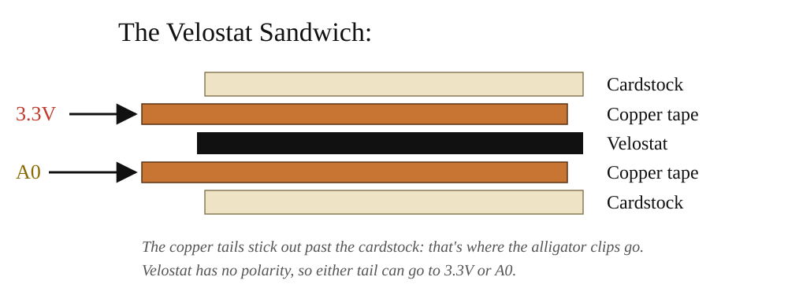

DIY Pressure Sensor Workshop
Summary
Today we’re making our own pressure sensor out of Velostat, a thin black plastic that conducts electricity. The harder you press on it, the better it conducts. We’ll use it to control the brightness of an LED: press lightly and the LED glows faintly, press hard and it gets bright. Then we’ll turn it into a voltage divider, the circuit an Arduino uses to read sensors like this one.
This workshop builds on the Breadboard Circuits Workshop: the Velostat is a variable resistor, just like the potentiometer and the light sensor, so it drops right into the same circuit.
Steps
[We will go over the steps together as a class].
- Build the Velostat sensor.
- Wire the Velostat sensor, a resistor and an LED together, then press!
- Turn the sensor into a voltage divider and measure it with a multimeter.
- Wire the sensor to your own Arduino and see it on the projector with everyone else’s.
How Velostat Works
Velostat is plastic filled with tiny carbon particles. When it’s resting, the particles are spread apart, so electricity has a hard time getting through. It has a high resistance. When you press on it, the particles get squeezed closer together and more paths open up for current, so the resistance drops.
That makes it a variable resistor, like the potentiometer in your kit, except you control it by squeezing instead of turning a knob.
| Resting | Pressed | |
|---|---|---|
| Carbon particles | Spread apart | Squeezed together |
| Resistance | High | Low |
| Current through the LED | Very little | More |
| LED | Dim / off | Bright |
Because it’s a flexible sheet, you can cut it to any shape and hide it inside soft objects, clothing, shoes, cushions or your own sculptures. That’s why it shows up so often in e-textiles and wearables.
Tools & Materials
From your electronics kit:
- Breadboard, power supply module and 9V adapter, set up as in the Breadboard Circuits Workshop
- LED (any color)
- 220Ω resistor (bands: red, red, brown)
- 10kΩ resistor (bands: brown, black, orange)
- Jumper wires
- Alligator clips
Provided by the lab:
- Velostat sheet
- Copper tape or aluminum foil
- Cardstock or thin cardboard
- Masking tape
- Multimeter (for testing your sensor, and for Part 3)
Part 1: Build the Velostat Sensor
The sensor is a sandwich: a piece of Velostat between two conductive layers, each with a wire coming off it.

- Cut two squares of cardstock, about 2” × 2” (5cm × 5cm).
- Stick a strip of copper tape onto each square. Leave an extra 1” tail hanging off the edge. That tail is where you’ll clip your wire.
- Cut a square of Velostat slightly bigger than the copper area. It should fully cover the copper so the two copper strips can never touch each other directly.
- Stack them: cardstock + copper (facing up), Velostat, then copper (facing down) + cardstock. Line the copper strips up in an X or directly on top of each other.
- Tape the edges closed with masking tape so the layers stay lined up.
- Clip an alligator clip to each copper tail. Those are your two sensor leads. It doesn’t matter which is which: Velostat has no polarity.
Optional test: set a multimeter to resistance (Ω) and touch the probes to the two copper tails. Watch the number drop as you press. If it reads close to 0Ω without pressing, the copper layers are touching; add more Velostat.
Part 2: The Velostat Circuit
This is the same circuit as the potentiometer and light sensor circuits from the Breadboard Circuits Workshop. Everything goes in one loop (a series circuit) from + to –, with the Velostat sensor as the variable resistor:
5V (+) → Velostat sensor → 220Ω resistor → LED → GND (–)
Click the drawing to open it full size.
With the power off:
- Place the LED across two rows on the breadboard. Remember which leg is longer: the long leg (+, anode) points toward power, the short leg (–, cathode) toward ground.
- Connect the LED’s short leg to the – rail with a jumper wire.
- Put the 220Ω resistor so one leg shares a row with the LED’s long leg, and the other leg is in a new, empty row.
- Clip one sensor lead to a jumper wire in the + rail.
- Clip the other sensor lead to a jumper wire in the resistor’s free row.
- Turn the power on and press the sensor. The LED should get brighter the harder you press.
Why the resistor? When you squeeze the Velostat hard, its resistance can get very low. The 220Ω resistor makes sure there’s always enough resistance in the loop to keep the LED from burning out.
Part 3: The Velostat as a Voltage Divider
So far the Velostat has changed how much current flows, which is why the LED got brighter. Soon an Arduino will read the sensor, but an Arduino can’t measure resistance or current directly. It can only measure voltage. A voltage divider turns a changing resistance into a changing voltage.
A voltage divider is just two resistors in a row between + and –. The 5V gets shared between them, and the point in the middle (Vout) sits somewhere between 0V and 5V, depending on how big each resistor is compared to the other:
- Velostat resting (high resistance): it takes most of the 5V, so Vout is low.
- Velostat pressed (low resistance): the 10kΩ resistor takes most of it, so Vout rises toward 5V.
You already used one: a potentiometer’s three legs are a voltage divider, with the middle leg as Vout. Turning the knob changes how the 5V is shared.
5V (+) → Velostat → Vout → 10kΩ resistor → GND (–)
With the power off:
- Place the 10kΩ resistor so one leg is in the – rail and the other is in an empty row. That row is Vout.
- Clip one sensor lead to a jumper wire in the + rail.
- Clip the other sensor lead to a jumper wire in the Vout row.
- Set the multimeter to DC volts (V with a straight line, the 20V range if it has ranges).
- Turn the power on. Touch the red probe to the Vout row and the black probe to the – rail.
- Press the sensor and watch the number climb. Write down the reading with no pressure, a light press and a hard press.
Try it: swap the 10kΩ resistor for the 220Ω one. Does the range of readings get bigger or smaller? The fixed resistor should be roughly as big as the Velostat’s resistance, so the voltage swings as much as possible.
On Wednesday, instead of the multimeter’s red probe, a wire
will go from Vout to the Arduino’s
A0 pin, and analogRead() will turn
the voltage into a number from 0 to 1023.
Part 4: Your Own Arduino on the Class Grid
Now your own Arduino Nano 33 IoT reads your sensor and sends it over Wi-Fi to the projector, where it gets its own tile. Everyone uploads the same sketch, so all you change is the Wi-Fi name and password.
1. Wire it
This is the voltage divider from Part 3, with the Arduino reading Vout:
3.3V → Velostat → A0 → 10kΩ resistor → GND

Click the drawing to open it full size.
The circuit gets three rows of its own, one for each point in the voltage divider: a 3.3V row, an A0 row (Vout) and a GND row. Everything in the same row is connected, so each wire only has to reach the right row. (The row numbers in the drawing are just an example: any three empty rows to the right of the Nano work.)
With the USB cable unplugged:
- Take the power module off your breadboard. The Arduino powers this circuit, so the + and – rails aren’t used.
- Place the Nano across the middle gap of the breadboard, USB end facing out so the cable reaches. Push it in evenly until the pins are all the way down.
- Pick three empty rows to the right of the Nano, with a space between each: these are your GND row, A0 row and 3.3V row.
- 10kΩ resistor: GND row ↔︎ A0 row. Put one leg in each.
- Black wire: GND pin → GND row. The GND pin is on the same side as 3.3V and A0, second from the far end (next to VIN). Plug the wire into a free hole in the GND pin’s row and run it to the GND row.
- Yellow wire: A0 pin → A0 row. A0 is the fourth pin from the USB end.
- Red wire: 3.3V pin → 3.3V row. 3.3V is the second pin from the USB end.
- Sensor: A0 row and 3.3V row. Put a wire in each row and clip one to each copper tail of your sensor. It doesn’t matter which tail goes where.
The pin names are printed on the Nano next to each pin, so check them as you go. Don’t use the 5V or VUSB pin: the Nano 33 IoT’s pins only take 3.3V.
2. Install the Wi-Fi library (once)
In the Arduino IDE, open the Library Manager (the books icon on the left, or Tools > Manage Libraries…), search for WiFiNINA and click Install.
3. Upload the sketch
- Make a new sketch (File > New Sketch), delete everything in it, and paste in the whole sketch below.
- Change
ROUTER_NAMEandROUTER_PASSWORDto the Wi-Fi name and password on the board. Keep the quotes. - Choose Tools > Board > Arduino SAMD Boards > Arduino Nano 33 IoT, and your board’s Port.
- Click Upload.
The board’s built-in LED blinks while it joins the Wi-Fi and stays on once it’s connected.
/*
Class Sensor (ART 150, DIY Pressure Sensor Workshop)
Every student uploads this same sketch to their own Arduino Nano 33 IoT.
It reads one Velostat sensor wired as the top half of a voltage divider:
3.3V -> Velostat sensor -> A0 -> 10k resistor -> GND
and sends the reading over Wi-Fi to the teacher's laptop, where it shows
up as your own tile on the Class Sensor Grid. Pressing the sensor raises
the number (0-1023).
The only lines to change are the Wi-Fi name and password just below.
You can watch your readings in the Serial Monitor or Serial Plotter
(115200 baud) too, even if the Wi-Fi doesn't connect. Lines starting
with "#" tell you what the Wi-Fi is doing, including your board's ID.
The built-in LED blinks while joining the Wi-Fi and stays on once
connected.
How it works: every board has a unique hardware address (its MAC
address), so the last six characters of it become this board's ID and
nobody has to pick a number. Readings go out as lines like "B3F9A21,412"
over UDP. The laptop's relay.py announces itself on the network once a
second; the board sends straight to it once it hears that, and to the
whole network until then.
*/
#include <SPI.h>
#include <WiFiNINA.h>
#include <WiFiUdp.h>
// ---- change these two lines to the classroom router's 2.4 GHz network ----
const char WIFI_NAME[] = "ROUTER_NAME";
const char WIFI_PASSWORD[] = "ROUTER_PASSWORD";
const int SENSOR_PIN = A0;
const unsigned int UDP_PORT = 9000; // relay.py listens here
const unsigned int BEACON_PORT = 9001; // relay.py announces itself here
const unsigned long SEND_EVERY = 66; // ms: about 15 readings a second
// light smoothing so readings don't jitter (0 = none, closer to 1 = smoother)
const float SMOOTHING = 0.6;
float smoothed;
char boardId[7]; // e.g. "3F9A21"
WiFiUDP udp;
IPAddress broadcastIP;
IPAddress relayIP; // learned from the relay's announcements
unsigned long lastBeacon = 0; // when we last heard one
bool relayKnown = false;
unsigned long lastWifiTry = 0;
bool wifiReady = false;
void setup() {
Serial.begin(115200);
pinMode(LED_BUILTIN, OUTPUT);
analogReadResolution(10); // 0-1023, like an Uno
smoothed = analogRead(SENSOR_PIN);
if (WiFi.status() == WL_NO_MODULE) {
Serial.println("# wifi: no Wi-Fi module found");
strcpy(boardId, "000000");
return;
}
// the MAC address comes back last byte first: mac[0] is the end of it
byte mac[6];
WiFi.macAddress(mac);
snprintf(boardId, sizeof(boardId), "%02X%02X%02X", mac[2], mac[1], mac[0]);
printId();
// an out-of-date Wi-Fi chip makes joining slow or flaky; say so at startup
String fw = WiFi.firmwareVersion();
if (fw < WIFI_FIRMWARE_LATEST_VERSION) {
Serial.print("# wifi: chip firmware ");
Serial.print(fw);
Serial.print(" is out of date (Arduino IDE > Tools > Firmware Updater)");
Serial.println();
}
connectWifi();
}
void printId() {
Serial.print("# board ID: ");
Serial.println(boardId);
}
// Join the network. Even when WiFi.begin() reports a failure, the Wi-Fi chip
// keeps trying on its own, and on a weak signal that can take 20+ seconds.
// Calling begin() again restarts that attempt from scratch, so we leave it
// 30 seconds between tries (and keep printing readings meanwhile).
void connectWifi() {
lastWifiTry = millis();
if (WiFi.status() == WL_NO_MODULE) return;
Serial.print("# wifi: joining \"");
Serial.print(WIFI_NAME);
Serial.println("\"...");
digitalWrite(LED_BUILTIN, HIGH);
int status = WiFi.begin(WIFI_NAME, WIFI_PASSWORD);
digitalWrite(LED_BUILTIN, LOW);
if (status == WL_CONNECTED) startSending();
else {
Serial.print("# wifi: could not join \"");
Serial.print(WIFI_NAME);
Serial.println("\" yet. Check the name and password; trying again in 30 s");
}
}
// Once on the network (whether our WiFi.begin() did it or the Wi-Fi chip
// reconnected by itself), work out where to send and open the socket.
void startSending() {
// send to the whole network (e.g. 192.168.1.255) until the relay is found
IPAddress ip = WiFi.localIP();
IPAddress mask = WiFi.subnetMask();
for (int i = 0; i < 4; i++) {
broadcastIP[i] = ip[i] | (~mask[i] & 0xFF);
}
WiFi.noLowPowerMode(); // keep the radio awake: steadier, faster sends
udp.begin(BEACON_PORT); // listen for the relay; we send to UDP_PORT
wifiReady = true;
Serial.print("# wifi: joined, address ");
Serial.println(ip);
printId();
}
// The relay sends "RELAY" to BEACON_PORT once a second.
void listenForRelay() {
while (udp.parsePacket() > 0) {
char buf[8] = { 0 };
udp.read(buf, sizeof(buf) - 1);
if (strncmp(buf, "RELAY", 5) == 0) {
if (!relayKnown || udp.remoteIP() != relayIP) {
Serial.print("# wifi: found the class grid at ");
Serial.println(udp.remoteIP());
}
relayIP = udp.remoteIP();
relayKnown = true;
lastBeacon = millis();
}
}
}
void send(const char *msg, int len) {
// straight to the laptop if we've heard it lately, otherwise everyone
bool direct = relayKnown && millis() - lastBeacon < 5000;
udp.beginPacket(direct ? relayIP : broadcastIP, UDP_PORT);
udp.write((const uint8_t *)msg, len);
udp.endPacket();
}
void loop() {
unsigned long started = millis();
// keep the Wi-Fi up, and show its state on the built-in LED
if (WiFi.status() == WL_CONNECTED) {
digitalWrite(LED_BUILTIN, HIGH);
if (!wifiReady) startSending();
// every 5 s, report the signal strength (closer to 0 is stronger;
// below about -75 dBm, readings start getting lost) as "R3F9A21,-62"
static unsigned long lastSignal = 0;
if (wifiReady && millis() - lastSignal > 5000) {
lastSignal = millis();
char msg[20];
int n = snprintf(msg, sizeof(msg), "R%s,%ld", boardId, WiFi.RSSI());
send(msg, n);
}
} else if (WiFi.status() != WL_NO_MODULE) {
if (wifiReady) {
udp.stop(); // reopened by startSending() after reconnecting
wifiReady = false;
relayKnown = false;
Serial.println("# wifi: lost the connection, reconnecting");
}
digitalWrite(LED_BUILTIN, (millis() / 250) % 2); // blink
if (millis() - lastWifiTry > 30000) connectWifi();
}
// read the sensor
int raw = analogRead(SENSOR_PIN);
smoothed = SMOOTHING * smoothed + (1.0 - SMOOTHING) * raw;
int value = (int)smoothed;
Serial.println(value); // just the number, so the Serial Plotter can graph it
if (wifiReady) {
listenForRelay();
char line[20];
int len = snprintf(line, sizeof(line), "B%s,%d", boardId, value);
send(line, len);
}
// wait out whatever is left of this reading's time slot
unsigned long spent = millis() - started;
if (spent < SEND_EVERY) delay(SEND_EVERY - spent);
}Troubleshooting
- Nothing lights up, even when pressing hard.
- Is the power module on, with its LED lit?
- Is the LED backwards? Flip it around.
- Are the LED, resistor and wires actually in the same rows? Follow the loop from + to – with your finger.
- The LED is bright even when you’re not pressing. The two copper layers are touching around the edges of the Velostat. Use a bigger piece of Velostat, or add a second layer.
- The LED barely changes. Try two layers of Velostat, a bigger sensor, or pressing with your whole palm. You can also try the 3.3V setting on the module to make small changes easier to see.
- The LED flickers. Check that the alligator clips are firmly on the copper tails and not slipping.
- The multimeter reads 0 or doesn’t change. Check it’s on DC volts, the black probe is on the – rail, and the red probe is in the same row as both the sensor lead and the 10kΩ resistor.
- (Part 4) The Serial Monitor says “could not join”. Check the Wi-Fi name and password, including capital letters, and keep the quotes around them.
- (Part 4) The LED stays on but there’s no
tile. Make sure the Serial Monitor says
found the class grid. If not, the teacher’s laptop isn’t on the same network or the grid isn’t running. - (Part 4) The readings stay at 0. The sensor isn’t reaching A0: check that the sensor and the 10kΩ resistor are both in the row wired to A0, and that the other sensor lead is on 3.3V.
- (Part 4) Upload fails or the port is missing. Try another USB cable (some only charge), or double-tap the Nano’s reset button and pick the port again.
Going Further
- Hide it in something. A glove, a pillow, a shoe insole, a book cover: where would pressure mean something?
- Swap the LED for the buzzer from the Breadboard Circuits Workshop: a pressure-activated alarm.
Video Walkthrough
Watch the Velostat Pressure Sensor Workshop video on YouTube